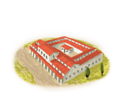
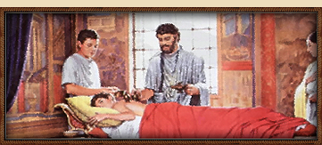
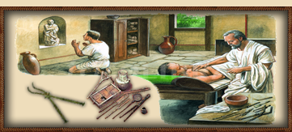
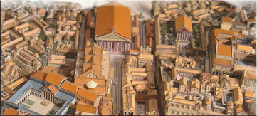

Imperium
Imperium Local Healer (Healing) chain
3 levels, each replacing the one before it — you upgrade in place rather than building alongside.
Local Healer (Healing) → Physician's Clinics (Healing) → Healing Sanctuary (Healing)
Pictures are the game's own building art. Where a culture ships none of its own, the game falls back to another culture's, and that is what is shown here.
Levels at a glance
| Level | Cost | Build time | Minimum settlement | Upgrades to | Level | Cost | Build time | Minimum settlement | Upgrades to | ||
|---|---|---|---|---|---|---|---|---|---|---|---|
| Local Healer (Healing) | 2,000 | 2 | town | Physician's Clinics (Healing) | Physician's Clinics (Healing) | 4,000 | 4 | large town | Healing Sanctuary (Healing) | ||
 | Healing Sanctuary (Healing) | 6,800 | 6 | city | — |
Costs in denarii, build time in turns.
Physician's Clinics (Healing)

A valetudinarium offers improved medical care, aiding both soldiers and civilians.
Rome’s legions may be unstoppable, but even the finest soldier is still made of flesh and blood, both of which are prone to being spilled.
So, as Rome’s armies march ever onward, its need for organized medical care grows. In the Valetudinarium, the wounded are tended by skilled medici, using bandages, splints, and herbal salves. Here, medici practice their trade, using vinegar to cleanse wounds, splints to mend broken limbs, and strong wine to silence complaints. Though primarily built for soldiers, even civilians may benefit from the expertise of these physicians, and while not all patients emerge unscathed, or at all, it is still an improvement over letting the gods decide their fate.
Wording varies by culture: 6 versions of this description exist in the game files.
| Cost | 4,000 denarii | Build time | 4 turns | Minimum settlement | large town |
| Upgrades to | Healing Sanctuary (Healing) |
What it does
- taxable income -5 to -1, scaling with settlement size (player only)
Show 12 effects that apply only in the circumstances shown
- +2 population health — only when
not perfumes_building_supply and not hospital_secondary_resource - +3 population health — only when
perfumes_building_supply or hospital_secondary_resource - -1 taxable income — only when
size1 and building_present_min_level health sewers and not is_player - -1 taxable income — only when
size2 and building_present_min_level health sewers and not is_player - -2 taxable income — only when
size3 and building_present_min_level health sewers and not is_player - -2 taxable income — only when
size4 and building_present_min_level health sewers and not is_player - -3 taxable income — only when
size5 and building_present_min_level health sewers and not is_player - -3 taxable income — only when
size6 and building_present_min_level health sewers and not is_player - -4 taxable income — only when
size7 and building_present_min_level health sewers and not is_player - -4 taxable income — only when
size8 and building_present_min_level health sewers and not is_player - -5 taxable income — only when
size9 and building_present_min_level health sewers and not is_player - -5 taxable income — only when
size10 and building_present_min_level health sewers and not is_player
Local Healer (Healing)

A trained medicus provides basic care for the sick and wounded, improving public health.
The Roman world is harsh, and even the strongest soldier or labourer may fall to injury or disease.
A local medicus is trained in simple remedies, setting broken bones, and stitching wounds. Though his knowledge is limited, his skills can mean the difference between life and death for the citizens of this settlement. The medicus is a man of practical skill, not lofty theory, he stitches wounds, sets bones, and, if all else fails, prescribes strong wine to dull the pain. His remedies may not rival those of Alexandria’s famed scholars, but in a world where even a minor cut can fester into something truly horrifying, his work is the difference between life and an early funeral. Rome does not waste good soldiers, nor useful citizens, so long as they can still stand and pay their taxes.
Wording varies by culture: 6 versions of this description exist in the game files.
| Cost | 2,000 denarii | Build time | 2 turns | Minimum settlement | town |
| Upgrades to | Physician's Clinics (Healing) |
What it does
- +1 population health
- taxable income -5 to -1, scaling with settlement size (player only)
Show 10 effects that apply only in the circumstances shown
- -1 taxable income — only when
size1 and building_present_min_level health sewers and not is_player - -1 taxable income — only when
size2 and building_present_min_level health sewers and not is_player - -2 taxable income — only when
size3 and building_present_min_level health sewers and not is_player - -2 taxable income — only when
size4 and building_present_min_level health sewers and not is_player - -3 taxable income — only when
size5 and building_present_min_level health sewers and not is_player - -3 taxable income — only when
size6 and building_present_min_level health sewers and not is_player - -4 taxable income — only when
size7 and building_present_min_level health sewers and not is_player - -4 taxable income — only when
size8 and building_present_min_level health sewers and not is_player - -5 taxable income — only when
size9 and building_present_min_level health sewers and not is_player - -5 taxable income — only when
size10 and building_present_min_level health sewers and not is_player
Healing Sanctuary (Healing)

A Sanctuary that ensures the health of Rome’s soldiers and citizens.
In this sanctuary, an esteemed association of skilled physicians trains the next generation of medici in the art of surgery, herbal remedies, and the ever-reliable practice of bleeding a man just enough to (hopefully) not kill him. Within its halls, wounds are stitched, fevers are studied, and sanitation systems are devised to keep the filth of the city at bay. While still limited by the stubborn insistence that bad air causes most ailments, these doctors can perform surprisingly effective surgeries, cauterize wounds with ruthless efficiency, and even recognize patterns of disease, sometimes before half the city has perished from them. With each patient treated, Rome’s mastery over life and death grows ever greater, ensuring that more men may return to the ranks and fewer to the underworld.
Historically, the establishment of the Asclepieion at Rome was also triggered by an onset of plague (293 BC), although the cult of Asclepius/Aesculapius had previously begun spreading into the Italian peninsula during the 5th c. BC. In the face of rising illness in the city, a delegation was dispatched to bring a serpent from Epidaurus – which, upon its arrival at Rome, legend holds, slithered off the ship and swam onto the small island in the midst of the Tiber river. There, the Romans founded an Asclepieion safely removed from the crowded city. Later, the island’s Travertine seawalls were configured to resemble the bow and stern of a Roman ship – a tribute to the original vessel that had arrived from Epidaurus. Today, the water-worn traces of a relief carved on the island’s downstream “bow” still depict Aesculapius’ snake-entwined staff.
Wording varies by culture: 5 versions of this description exist in the game files.
| Cost | 6,800 denarii | Build time | 6 turns | Minimum settlement | city |
What it does
- taxable income -6 to -2, scaling with settlement size (player only)
Show 14 effects that apply only in the circumstances shown
- +3 population health — only when
not perfumes_building_supply and not hospital_secondary_resource - +4 population health — only when
perfumes_building_supply and not hospital_secondary_resource - +4 population health — only when
not perfumes_building_supply and hospital_secondary_resource - +5 population health — only when
perfumes_building_supply and hospital_secondary_resource - -2 taxable income — only when
size1 and building_present_min_level health sewers and not is_player - -2 taxable income — only when
size2 and building_present_min_level health sewers and not is_player - -3 taxable income — only when
size3 and building_present_min_level health sewers and not is_player - -3 taxable income — only when
size4 and building_present_min_level health sewers and not is_player - -4 taxable income — only when
size5 and building_present_min_level health sewers and not is_player - -4 taxable income — only when
size6 and building_present_min_level health sewers and not is_player - -5 taxable income — only when
size7 and building_present_min_level health sewers and not is_player - -5 taxable income — only when
size8 and building_present_min_level health sewers and not is_player - -6 taxable income — only when
size9 and building_present_min_level health sewers and not is_player - -6 taxable income — only when
size10 and building_present_min_level health sewers and not is_player
What the shorthands in those conditions stand for (12)
These are the mod's own, quoted from the game files unchanged.
| Shorthand | Stands for | Shorthand | Stands for | Shorthand | Stands for |
|---|---|---|---|---|---|
hospital_secondary_resource | resource fruits or resource honey or resource pitch or resource sulphur | perfumes_building_supply | resource perfumes or hidden_resource perfumes_supply_built factionwide | size1 | major_event "empire_size1" |
size10 | major_event "empire_size10" | size2 | major_event "empire_size2" | size3 | major_event "empire_size3" |
size4 | major_event "empire_size4" | size5 | major_event "empire_size5" | size6 | major_event "empire_size6" |
size7 | major_event "empire_size7" | size8 | major_event "empire_size8" | size9 | major_event "empire_size9" |